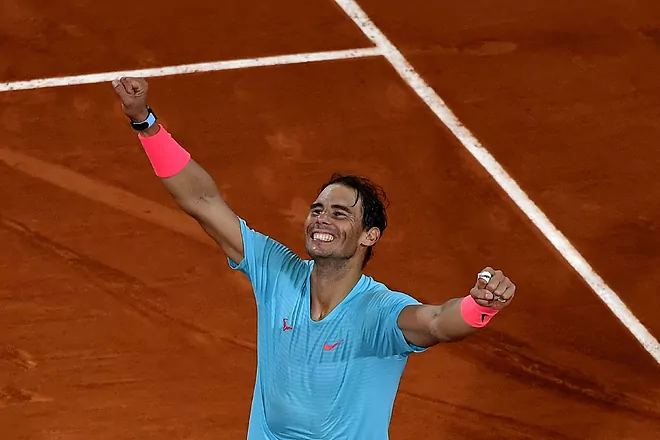

El tenista español ha conquistado este domingo su decimotercer título de Roland Garros sin dar opciones en la final (6-0, 6-2, 7-5) al número uno del mundo, el serbio Novak Djokovic.
Quince años después de su primera final en París, Nadal sigue levantando la Copa de los Mosqueteros (2005, 2006, 2007, 2008, 2010, 2011, 2012, 2013, 2014, 2017, 2018, 2019 y 2020). El balear se mostró intratable de principio a fin para defender sus dominios del enemigo y mayor rival e iguala por primera vez a Federer en el techo histórico del tenis. Djokovic, número uno y casi imbatido en 2020, nada pudo hacer contra el balear al que solo se le escaparon un puñado de golpes y se anotó la victoria en todos los sets (6-0, 6-2 y 7-5). Felicitaciones El rey ha transmitido su enhorabuena este domingo al tenista por llevar a España "a lo más alto". "¡¡13 de trece!! ¡Siempre Rafa, España contigo a lo más alto!", reza el mensaje de Felipe VI distribuido a través de la cuenta de Twitter de la Casa Real. Antes de la final en París, el rey también había enviado su ánimo al tenista mallorquín a través de la red social: "Todos contigo. Este torneo es tuyo. No te alcanzará nadie". Por su parte, el presidente del Gobierno, Pedro Sánchez, también ha felicitado al manacorí a través de esta red social. "¡Rafa, lo has vuelto a conseguir! Tu XIII Roland Garros y XX Grand Slam te llevan a un terreno único. Solo tú conoces el camino. Hoy haces de nuevo felices a millones de aficionados que hemos vivido contigo esta nueva victoria", ha celebrado el jefe del Ejecutivo. Por su parte, el líder del PP, Pablo Casado, se ha mostrado "orgullo" de "nuestro mejor deportista de la historia" y "un gran embajador de España". "Hoy logra su decimotercer Roland Garros y su vigésimo Grand Slam, igualando el récord de Federer. ¡Enhorabuena, campeón!", ha escrito. También el presidente de Vox, Santiago Abascal, se ha sumado a las felicitaciones en Twitter. "En estos momentos de zozobra nacional y de tristeza para muchos españoles, el gran Rafa Nadal nos ha permitido disfrutar de otra histórica victoria lograda con esfuerzo, perseverancia y con pudonor. Un ejemplo para todos", ha subrayado. La líder de Ciudadanos, Inés Arrimadas, ha señalado que el mallorquín "vuelve a hacer historia con otro triunfo espectacular". "Qué gran orgullo para todos los españoles contar con una leyenda como tú. ¡Muchas felicidades y muchas gracias por tanto!", ha afirmado. Nadal, de 34 años, ha conquistado su título número 13 del mejor torneo del mundo en tierra batida y con ello suma su vigésimo Grand Slam, lo que le iguala al suizo Roger Federer.